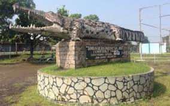
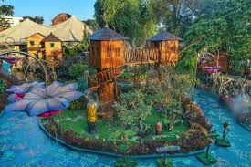

|
Taman Buaya Indonesia Jaya adalah salah satu tempat wisata edukatif di Indonesia
yang berlokasi di Bekasi, Jawa Barat. Tempat ini menjadi penangkaran sekaligus taman wisata
yang menampung lebih dari 500 ekor buaya dari berbagai spesies.
Pengunjung dapat melihat buaya dari jarak aman dan belajar mengenai perilaku serta cara hidupnya.

Selain melihat buaya, pengunjung juga dapat menikmati atraksi menarik seperti
pertunjukan buaya, penangkaran bayi buaya, dan area taman bermain untuk anak-anak.
Suasana yang rindang dan sejuk menjadikan taman ini cocok untuk wisata keluarga sekaligus edukasi.

Mengapa Kunjungi Taman Buaya Indonesia Jaya?
🐊 Edukasi Satwa
Belajar tentang siklus hidup, habitat, dan konservasi buaya dari pawang profesional kami. Pengalaman seru sekaligus menambah wawasan!
🎬 Pertunjukan Menarik
Saksikan atraksi panggung yang mendebarkan dan menguji nyali bersama buaya terlatih. Momen yang tidak akan Anda lupakan!
👨👩👧👦 Wisata Keluarga
Nikmati fasilitas lengkap termasuk taman bermain anak, area piknik, dan spot foto bertema alam yang sempurna untuk semua anggota keluarga.
🔎 Koleksi Satwa
Lihat berbagai jenis buaya dari berbagai usia dan ukuran, serta koleksi model hewan yang beragam dan mengagumkan.
|